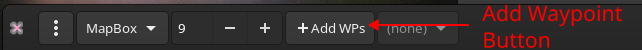
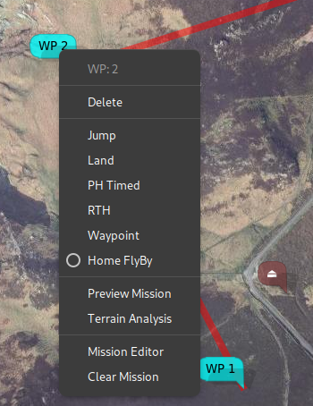

Mission Editor#
Overview#
Another slightly outdated video, generic mission editing.
Current situation
Please also refer to the following articles that provide specific information for advanced inav topics:
Map Features#
Missions are edited on the map by enabling mission edit mode:

This will:
- Display a notional home location (brown icon)
- Allow new WPs to be created by clicking on the map
- Provide a context popup menu by right click on a WP icon
The context menu depends on the type of the current WP, for example:

The use of more advanced functions, for example setting parameter values, moving multiple WP, mission preview etc. requires the tabular mission editor
Mission Editor#
The mission editor may be invoked from the dock or from a WP context menu.
It provides the following functions:
- Create, delete, modify, reorder waypoints.
- Inline editing of parameters
- Context sensitive column titles for parameter editing
- Bulk updates (altitudes, speeds, position offsets)
- Automated path (polygon around a shape) generation.
- Terrain Analysis, automated altitude correction.
There is a right mouse context menu, the availability of items depending on whether zero, one or multiple items are selected.


Common Operations#
Many of the operations described below are shown in the videos, which probably provide a clearer explanation that any textual description could.
Editing#
Way points can be edited Mission Editor. When a row is selected, the column headers will change to indicate the data fields appropriate to the point type (in particular the “parameters” P1,P2,P3 whose interpretation is dependent on the point type.
- Position. The position of a way point may be changed by dragging the way point icon on the map or editing in the list.
-
Order. The order of way points may be changed by either:
- Using the “Move Up” and “Move Down” entries from the mission pop-up menu; or
- Dragging the list item to the desired position. In order to drag, the entry must be 'grabbed' on the ID column. In that screen-shot (below), way point 7 is being dropped between way points 3 and 4.
-
At the end of the drop, the list and markers on the map will be re-ordered.

-
Type. The way point type may be selected from a drop down menu embedded in the "Type" column of the list:

Once the type has been changed, default parameters for that way point type or action will be set. The type may also be set by a right mouse button click on the map symbol.
- Altitude. New points are created with the default altitude (from the "Preferences". Some basic validation is performed
- Parameters P1, P2 and P3. The parameters P1,P2 and P3 are integer values that have a meaning specific to the way-point type or action. For example, for action type of JUMP, P1 is the point to which to jump, and P2 is the number of repeats. This usage is documented in the inav wiki.
- Delete. The delete action will delete the selected (highlighted) way point(s). If no way point is selected, this option has no affect.
Add Shape#
If a SET POI point is added to the mission, (there may also be other extant way-points), this option will display a dialogue to enter the number of points in a shape, the radial distance (from the SET POI to each point), an offset angle and the direction of rotation. i.e this defines a polygon around the POI.
- The offset is relative to North. If you wanted the lines to be horizontal / vertical, specify an offset of 45° for a square.
- Shape points are appended to any extant mission points, and the shape tool may be invoked multiple times, for example to create 'concentric' circles.
- The
SET_POIpoint may be deleted, unless you really wantSET_POIfunctionality.
Location Updates#
Bulk location updates may be applied to selected waypoints.

If an item if left black (or 0), then no adjustment is applied to that axis. Offsets are in metres, regardless of the user's preference distance unit.
Speed and Altitude updates#
Bulk speed and altitude updates may be applied to selected waypoints.
Convert Altitudes#
From inav 3.0, inav supports both relative and AMSL altitudes. This, and the mwp features for managing this, are described in a separate article
Replicate Waypoints#
This item facilitates the cloning of waypoints. Since inav now supports the JUMP waypoint type, this option is less useful.
Preview Mission#
"Flys" an aircraft icon around the mission; this may be useful for predicting the behaviour of embedded JUMPs.
Clear Mission#
The Clear Mission option clears the mission. There is no confirmation, so be sure you really want to do this.
Advanced WP types / Video Tutorials#
JUMP, POSHOLD TIMED, LAND#
Video example setting up JUMP, POSHOLD TIMED and LAND waypoints.
SET_POI, SET_HEAD as mission elements#
Video example SET_POI and SET_HEAD (real mission usage).
Mission Preview#
Video example of preview for a complex (multiple jumps, timed POSHOLD) mission (preview from the first video).